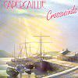

Celtic Lyrics Corner > Artists & Groups > Capercaillie > Crosswinds
|  |
Crosswinds
(1987) |
| Tracks : |
1.
Puirt A Beul/Snug In A Blanket
2. Soraidh Bhuam Gu Barraidh 3. Glen Orchy/Rory MacLeod 4. Am Buachaille Ban 5. The Haggis 6. Brenda Stubbert's Set 7. Ma Theid Mise Tuilleagh 8. David Glen's 9. Urnaigh A 'Bhan-Thigreach 10. My Laggan Love/Fox On The Town 11. An Ribhinn Donn |